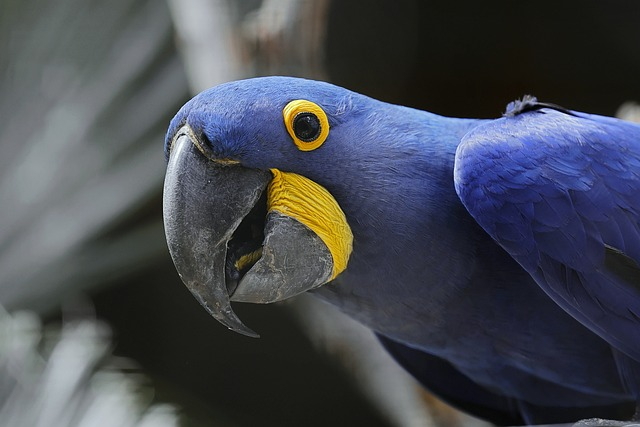

In my third project, I learned the usage of GIMP to edit photos and how to show them on a webpage using HTML. This project introduced me to the domain of image manipulation and how it can be an important aspect of improving web design. The goal was to take a raw image, edit it to enhance its appearance or apply special effects, and then demonstrate the difference between the original and edited versions on the website.
In this project, I first chose an image and made a series of edits in GIMP. I tried cropping and resizing, and added filters to improve the image. Then, I learned how to optimize images for the web by decreasing their file size without compromising quality, which helps in faster website loading times.
After the edits were completed, I was able to display both the original and edited images in HTML. I learned how to use the HTML img tag to embed images into a webpage and adjust the dimensions and placement of the images using width, height, and alignment attributes.
Comparing the original and edited images side by side really helped me understand the impact image editing can have on web design, as well as how image optimization can affect website performance and user experience.
This description covers all the major concepts of my project, from editing images in GIMP to displaying them in HTML. Please let me know if anything needs to be added or if you'd like me to make any changes.